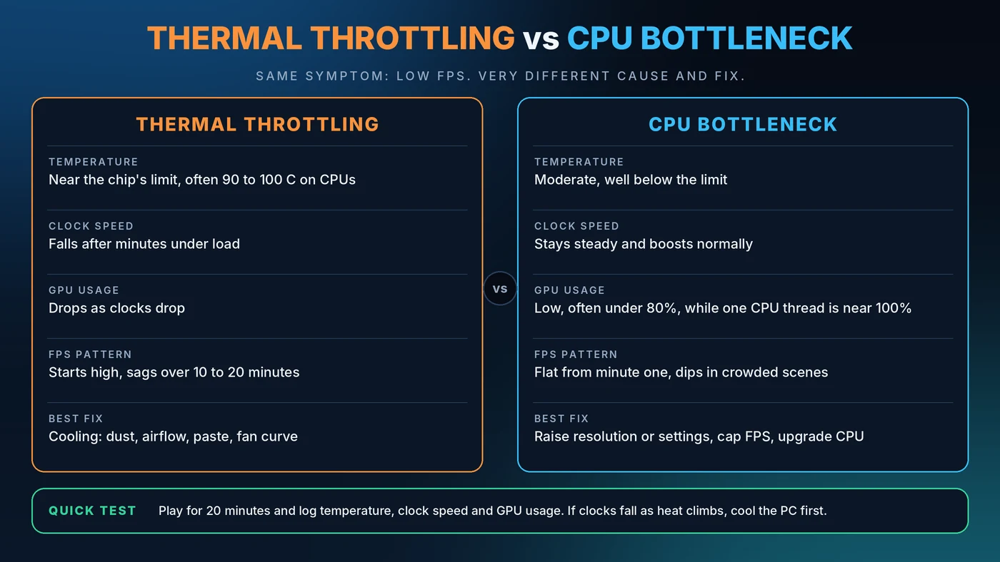

Thermal Throttling vs CPU Bottleneck: How to Tell the Difference
Your frame rate tanks after twenty minutes. Or your GPU sits at 60% while the CPU looks busy. Both feel like a bottleneck, yet one is a cooling problem and the other is a balance problem. Fixing the wrong one wastes time and money.

Quick Answer: How to Tell Them Apart
If your temperatures climb and clock speeds fall over the length of a gaming session, that is thermal throttling. If your GPU usage stays low while one CPU thread sits near 100% from the very start, that is a CPU bottleneck. The first is fixed with cooling. The second is fixed with settings, balance or a new processor.
What Is Thermal Throttling?
Think of a runner who slows down when overheating so they do not collapse. Processors do something similar. When a CPU or GPU reaches its temperature or power limit, it lowers its clock speed to protect itself. Your game gets less processing speed, so frame rates drop.
Throttling is a safety feature, not a defect. But if it happens during normal play, it means your cooling cannot keep up with the heat your parts produce.
What Is a CPU Bottleneck?
A CPU bottleneck happens when the processor cannot prepare frames fast enough to keep the graphics card busy. The GPU then waits, and its usage falls. Nothing is overheating. The two parts are simply mismatched for that game and resolution. For a full explanation, read our CPU vs GPU bottleneck guide.
Safe CPU and GPU Temperatures While Gaming
Safe ranges vary by chip, so always check the maximum for your exact model. These general ranges are a good starting point.
CPU Temperatures
Most gaming CPUs land somewhere between 60 and 85°C under load. Many modern processors are designed to run warm and boost aggressively, with limits around 95 to 100°C depending on the model. A brief spike is normal. A CPU that sits at its limit through an entire session means the cooler is marginal.
GPU Temperatures
Graphics cards commonly run in the 65 to 85°C range while gaming. Cards often start trimming clock speeds in the 80s, and the hotspot and memory sensors read higher than the main temperature. Consistently reaching the manufacturer's maximum is the signal to improve airflow or adjust the fan curve.
Laptops
Laptops run hotter and throttle earlier because cooling space is tight. Keep the vents clear, play on a hard surface or a cooling stand, and use the plugged-in performance mode.
Our PC usage guide shows a temperature chart and explains how to read your sensors.
Thermal Throttling vs CPU Bottleneck, Side by Side
- Temperature: Throttling sits near the chip's limit. A CPU bottleneck stays moderate, well below it.
- Clock speed: Throttling clocks fall over minutes under load. A bottleneck keeps steady, normal boost clocks.
- GPU usage: With throttling, usage drops as clocks drop. With a bottleneck, it is low from the start, often under 80%, while one CPU thread is near 100%.
- FPS pattern: Throttling starts high and sags over 10 to 20 minutes. A bottleneck is flat from minute one and dips in crowded scenes.
- Best fix: Throttling needs better cooling. A bottleneck needs different settings, a frame cap or a CPU upgrade.
How to Test for Thermal Throttling
- Install a monitoring tool such as HWiNFO (sensors only) and MSI Afterburner for an on-screen overlay.
- Start a demanding game and play for 20 to 30 minutes.
- Watch CPU and GPU temperature, core clock speed and GPU usage together.
- Look for the thermal throttling indicators. HWiNFO shows per-core throttling flags, and GPU monitoring tools report the performance limiter.
- Compare minute five with minute twenty-five. If clocks and FPS have fallen while temperature rose, you are throttling.
A stress test such as a CPU render loop can confirm cooling limits too, but it creates more heat than games do, so treat it as a worst-case check.
How to Test for a CPU Bottleneck
- Open a monitoring overlay and load a CPU-heavy scene, such as a busy city or a large battle.
- Check GPU usage. A figure well below 90% in a game you expect to be GPU-heavy is a clue.
- Check per-core CPU usage. One thread near 100% is the classic sign.
- Lower the resolution. If FPS barely changes, the CPU is the limit.
Our guide on how to check a PC bottleneck covers each step in more detail.
Can Heat Cause or Worsen a Bottleneck?
Yes, and the two problems can overlap. A throttled CPU becomes the slowest part, which can create a CPU bottleneck that was not there when the PC was cool. A hot GPU also lowers its boost clock, which reduces frame rates even when the CPU is fine.
That is why the order matters. Fix cooling first, retest, and only then judge the balance of the system. A bottleneck calculator cannot see your temperatures, so heat problems will not show up in its estimate. See what a good bottleneck percentage looks like for more on that limit.
How to Fix Thermal Throttling
- Clean the dust. Dust-clogged filters, fans and heatsinks are the most common cause.
- Improve case airflow. Balance intake and exhaust fans so hot air actually leaves the case.
- Set a better fan curve so fans ramp up before temperatures peak.
- Check the CPU cooler. Make sure it is mounted evenly and that the thermal paste is fresh. Old or dried paste can add noticeable heat.
- Lower power limits or undervolt. A small undervolt often cuts heat with little or no loss in performance.
- Cap your frame rate. Running flat out at 400 FPS creates heat you may not need.
- Mind the room. A warm room limits what any cooler can do.
How to Fix a CPU Bottleneck
Raise resolution or graphics quality so the GPU takes more of the work, cap the frame rate, close background apps, and make sure memory runs at its rated speed. If the limit remains, a CPU upgrade may be the answer. Our guides on fixing 100% CPU usage and reducing PC bottlenecks list the options in order.
Conclusion
Low FPS has many causes, and heat and a CPU limit look alike on the surface. Watch temperature, clocks and GPU usage together over a full session. If clocks fall as heat rises, cool the PC first. If everything is steady and the GPU is under-used, look at balance. When you are ready to check balance, run your parts through the Bottleneck Calculator.
Frequently Asked Questions
What CPU temperature is too hot for gaming?
It depends on the model, but sustained temperatures at the chip's limit, usually around 95 to 100°C for many modern CPUs, mean your cooling is struggling. Most gaming systems run between 60 and 85°C. Always check the maximum temperature listed for your exact CPU.
Is 85°C safe for a CPU while gaming?
For many modern CPUs it is within the designed range, but if it is rising steadily or the CPU is throttling, improve cooling. Check your specific processor's maximum before deciding.
Does thermal throttling reduce FPS?
Yes. When a CPU or GPU throttles, it lowers its clock speed, which reduces frame rates and can cause stuttering. FPS often starts high and drops after 10 to 20 minutes of play.
Can a CPU bottleneck damage my PC?
No. A CPU bottleneck only means the processor is limiting the graphics card. It does not harm hardware. Overheating is a separate issue and is the one that needs attention.
How do I know if it is throttling or a bottleneck?
Log temperature, clock speed and GPU usage for 20 to 30 minutes. Falling clocks with rising heat points to throttling. Steady clocks with low GPU usage and one busy CPU thread points to a CPU bottleneck.